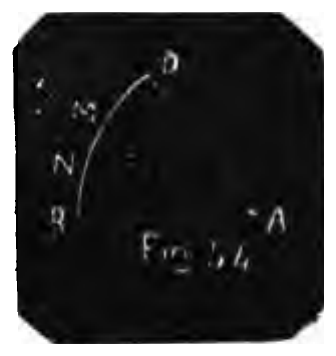
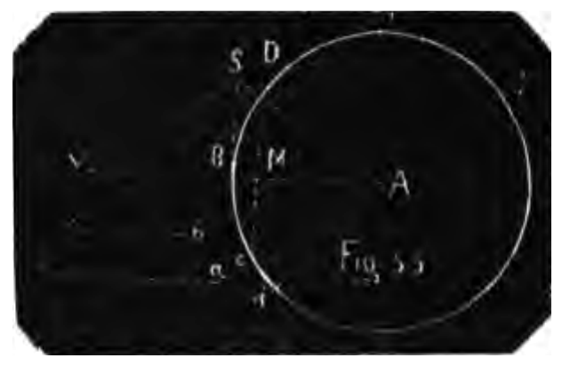
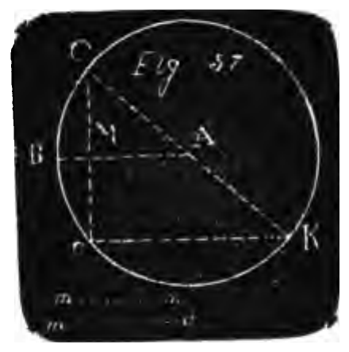

§§ 118–123: Angle Bisection & Trigonometric Lines¶
118. Problem. To bisect the angle \(BAC\) (fig. 54) given only by the three points \(B, A, C\) in which \(A\) is unequally distant from \(B\) and from \(C\).
Solution. With center \(A\) and radius \(AB\) let arc \(BMD\) be described. Make \(CB = CD\). Bisect arc \(BMD\) at \(M\) (§ 60). Bisect arc \(BM\) at \(N\). Then angle \(BAN\) will be half of angle \(BAC\).
Demonstration. Since angle \(BAD\) is double \(BAC\) (§ 116) and likewise double \(BAM\) (VI.33), angle \(BAC\) will be the same as \(BAM\). But angle \(BAN\) is half of \(BAM\). Therefore, etc.


119. Problem. Given the arc \(BC\) (fig. 55) described with center \(A\), to find its sine, cosine, tangent, and secant.
Solution. On the circumference described with radius \(AB\), make \(BC = Bc\). Bisect \(Cc\) at \(M\) (§ 66). Then \(CM\) will be the sine, and \(MA\) the cosine.
With center \(M\) and radius \(MA\) describe an arc cutting the circumference, if it can, at \(D\) and \(d\). Determine the semicircumference \(dD\delta\) (§ 64). By the same § add to \(BA\) its equal \(BV\). With centers \(A\) and \(V\), and radius \(D\delta\), describe two arcs intersecting at \(S\). Then \(BS\) will be the tangent, and \(SA\) the secant.
Demonstration. Line \(BA\) cuts \(Cc\) at right angles at its midpoint \(M\) (§ 14). Hence \(CM\) is the sine and \(MA\) is the cosine of arc \(BC\). Line \(SB\) is perpendicular to \(AB\) (§ 83). Line \(D\delta\) is the third proportional to \(AM, AC\) (§ 87); hence also its equal \(AS\). Therefore in the two right triangles \(AMC, ABS\) we have the proportion \(AM : AC :: AB : AS\), and by inversion (V.4) \(AC : AM :: AS : AB\). Hence (V.35) \((AC)^2 : (AM)^2 :: (AS)^2 : (AB)^2\). Substituting for \((AC)^2\) and \((AS)^2\) their values drawn from I.47, we shall have \((AM)^2 + (MC)^2 : (AM)^2 :: (AB)^2 + (BS)^2 : (AB)^2\).


Hence (V.17) \((MC)^2 : (AM)^2 :: (BS)^2 : (AB)^2\). Hence (V.34) \(MC : AM :: BS : AB\). Therefore the sides \(MC, BS\) are also proportional. We shall therefore have angle \(MCA\) the same as \(BSA\) (VI.5). Hence the points \(A, C, S\) will lie on the same straight line, and \(BS\) will be the tangent and \(SA\) the secant of arc \(BC\).
If the circle described with center \(M\) and radius \(MA\) should not cut the circumference, or should cut it at too acute angles, one should have recourse to § 89 or to §§ 90 and 91.
Another Solution for finding the tangent and the secant. Determine the semicircumference \(BCE\) (fig. 56) (§ 64). With radius \(BC\) and center \(E\), cut this at \(Q\). With radius \(CQ\) and centers \(A\) and \(B\), mark two arcs intersecting at \(V\). With the same radius \(CQ\) and center \(V\), cut the circumference at \(e\). With radius \(Ee\) and centers \(A\) and \(B\), mark two arcs intersecting at \(m\). With the same radius \(Ee\) and center \(m\), describe the semicircumference \(ABS\) (§ 64). Then \(SB\) will be the tangent, and \(SA\) the secant.

Demonstration. Let the arc \(BCF\) be equal to the quadrant \(= FE\); since \(BC = QE\), we shall also have \(CF = FQ\). Moreover, by the trigonometric definitions, the sine of arc \(CF\) will be the same thing as the cosine of arc \(BC\). Then the chord of arc \(CFQ\), double arc \(CF\), will be double the sine of arc \(CF\), that is, of the cosine of arc \(BC\). This chord is \(CQ = AV\). We also have (§ 22) \(AV \cdot Ee = (AB)^2\). Since the straight line \(AmS\) (§ 64) \(= 2\,Ee\) and \(AV = 2\cos BC\), we shall have \(2\,Ee \cdot \cos BC = (AB)^2 = AS \cdot \cos BC\). Hence \(\cos BC : AB :: AB : AS\) (VI.17). Therefore \(AS\) will be the third proportional to the cosine and the radius; and hence it will equal the secant, according to the trigonometric demonstrations. Moreover angle \(ABS\) is right (III.31). Therefore \(AS\) will be the secant in its position, and hence \(BS\) the tangent.
120. Problem. Given the sine \(mn\) (fig. 57) of an arc of a given radius \(AB\), to find this arc.
Solution. Having described the circle \(CcK\) with radius \(AB\), find a double of \(mn\) (§ 64). With this taken as radius, and with center
f. 0092 · p. 67at some point \(C\) of the circumference, describe an arc cutting it at \(c\). Bisect arc \(Cc\) at \(B\) (§ 60). Then \(BC\) will be the arc sought.
Demonstration. By the trigonometric definition, the sine of arc \(BC\) is half the chord of the arc double \(BC\). Therefore, etc.


121. Problem. Given the cosine \(ma\) (fig. 57) of an arc of a given radius \(AB\), to find this arc.
Solution. Having described the circle \(CcK\) with radius \(AB\), find a double of \(ma\) (§ 64). With center at some point \(c\) of the circumference and this double taken as radius, cut the circumference at \(K\). Determine the semicircumference \(KcC\) (§ 64). Bisect arc \(Cc\) at \(B\) (§ 60). Then \(BC\) will be the arc sought.
Demonstration. Let the other chord \(Cc\) be drawn. It will be bisected at right angles at \(M\) by radius \(AB\) (§ 14). But angle \(CcK\) is also right (III.31), being in the semicircle \(CcK\). Therefore the two triangles \(CMA, CcK\), having a common angle at \(C\) and the other right, are equiangular to one another (I.32), and we have (VI.4) \(CM : Cc :: MA : cK\). But \(CM\) is half of \(Cc\). Hence \(MA = \frac{1}{2} cK = ma\). Now \(MA\) is the cosine of arc \(BC\). Therefore, etc.
122. Problem. Given the tangent \(sb\) of an arc of a given radius \(AB\) (fig. 55), to find this arc.
Solution. Having described the circle \(BC\delta\) with radius \(AB\), erect at \(B\) perpendicular to \(AB\) the line \(BS = bs\) (§ 76). Find the point \(C\) where \(SA\) cuts the circumference (§ 111). Then \(BC\) will be the arc sought.
This Solution needs no demonstration.
123. Problem. Given the secant \(sa\) of an arc of a given radius \(AB\) (fig. 55), to find this arc.
Solution. Having described the circumference \(BC\delta\) with radius \(AB\), and laid off on \(AB\) its equal \(BV\) (§ 64), with centers \(A\) and \(V\) and radius \(sa\) describe two arcs intersecting at \(S\). Find the point \(C\) where \(SA\) cuts the circumference (§ 111). Then \(BC\) will be the arc sought.
f. 0093 · p. 68Demonstration. Line \(SB\) will be perpendicular to \(BA\) (§ 83); hence it will be the tangent of arc \(BC\), and therefore \(SA\) the secant.